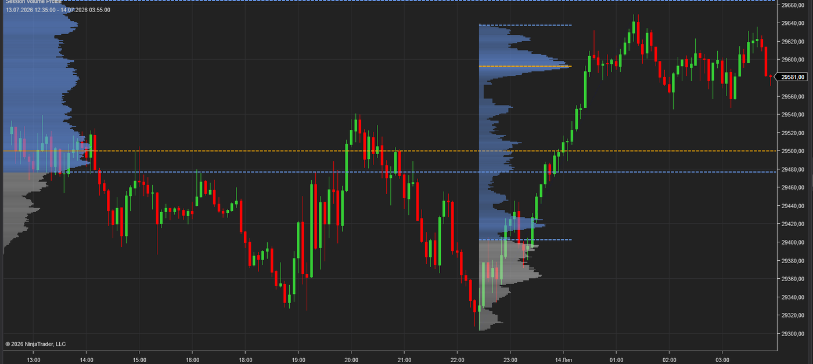

A per-session Volume Profile that builds automatically for every trading session, plus an Anchored Volume Profile drawing tool for any custom range. See where volume actually traded — POC, Value Area, and High Volume Nodes on every session.
$59 · Bundle
1-day trial · Full version · No signup required

Builds a Volume Profile for each trading session automatically. Left or right chart anchoring, configurable session times, works on any instrument.
Assign it to your own hotkey in NinjaTrader and drag over any range — swing, news spike, weekly balance — to get an instant profile for exactly that area. Fully integrated with the indicator's volume data.
Point of Control and Value Area (configurable Value Area %) are calculated and drawn for every profile, with extension lines into current price action.
Automatic HVN peak detection with adjustable Detection Strength — key acceptance levels are marked without manual work.
From a clean outline to full histogram with value area shading — pick the mode that matches your chart style.
Choose Tick data for maximum precision or Minute data for fast loading on long lookbacks. Row Height is fully configurable.
A composite profile over the whole chart hides structure. Markets rotate around session value: the overnight profile frames the open, the London profile frames the New York session, and yesterday's POC is one of the most commonly retested intraday levels.
The built-in NinjaTrader Volume Profile is limited in anchoring and session handling. This indicator splits volume by session automatically, so you always see where value was built in the session that matters — and the drawing tool covers every ad-hoc range the indicator doesn't.
Typical uses: trading reversion to the prior session POC, fading moves outside the Value Area, spotting acceptance vs. rejection at High Volume Nodes, and framing opening drive targets from the overnight profile.
Download the .zip file (trial or full version from Gumroad).
In NinjaTrader 8: Tools → Import → NinjaScript Add-On, select the .zip.
Restart NinjaTrader, add Session Volume Profile to any chart. Assign the drawing tool to a hotkey of your choice in NinjaTrader's keyboard settings.
Full version: send your Machine ID after purchase — activation is confirmed the same day, then restart NT8.
Yes. Choose Tick or Minute as the Volume Data Source. Tick gives the most precise profile; Minute loads faster on long lookbacks.
Any instrument with volume data in NinjaTrader 8 — futures, stocks, and volume-reporting forex feeds.
Yes — that's the Anchored Volume Profile drawing tool. Assign it to your own hotkey and drag over any bars; the profile with POC and Value Area builds instantly.
The trial is the full version, limited to 1 day. No signup, no email required.
Indicator + Anchored drawing tool · Lifetime license · Support included
Official NinjaTrader Ecosystem Vendor. NinjaTrader® disclaimer and vendor requirements will be added here.